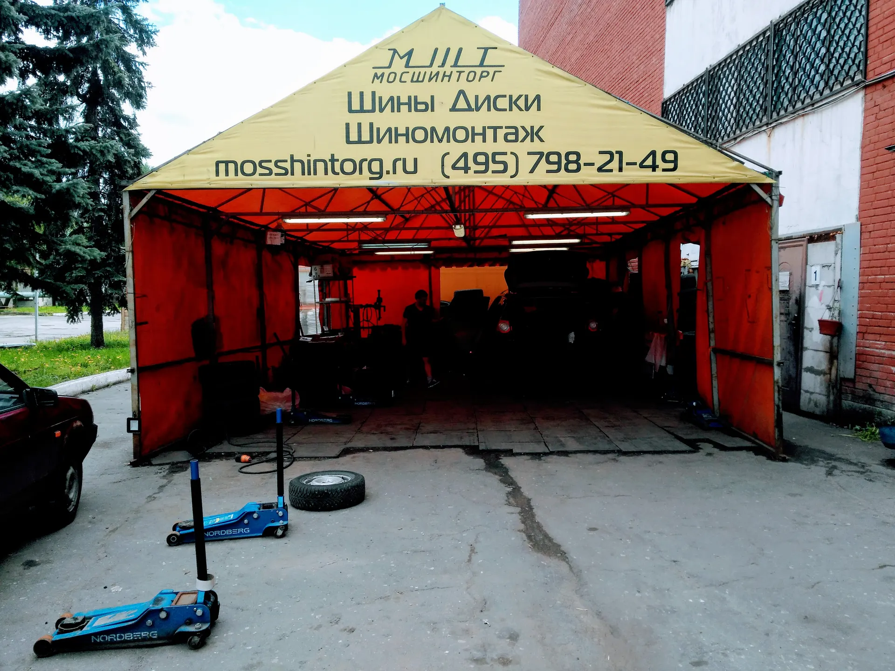
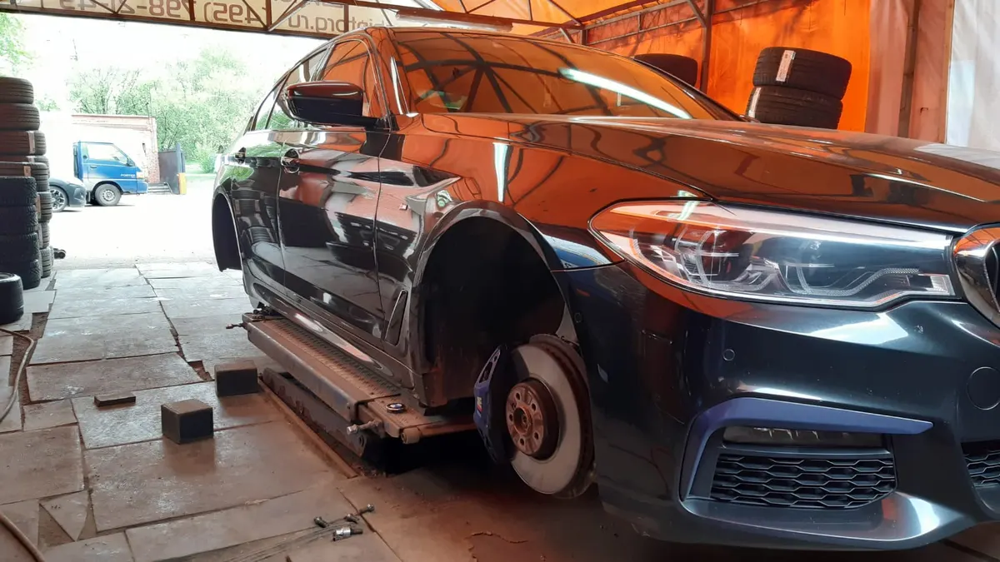
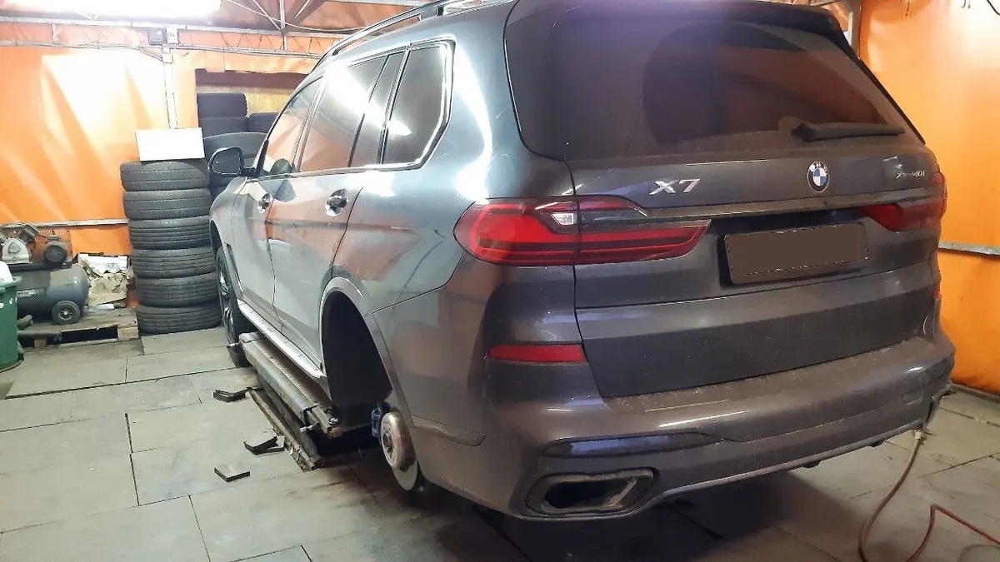
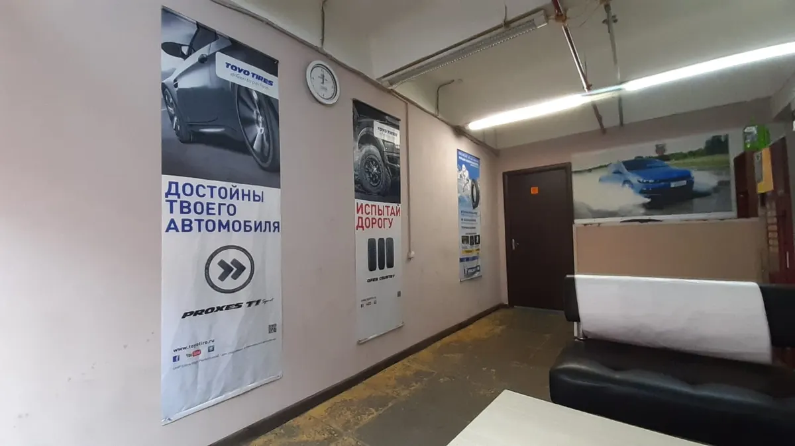

Шины, диски, шиномонтаж · пр. Добролюбова, 3
Мосшинторг – шины в наличии и шиномонтаж в одном месте на Добролюбова
Проезд Добролюбова, 3, стр. 1. Летние, зимние и всесезонные шины, литые диски, шиномонтаж, правка дисков и хранение. При покупке комплекта шиномонтаж бесплатно.
- Пн–пт 9:30–20:00, сб–вс 10:00–18:00
- 265 оценок, рейтинг 4,7
- Шиномонтаж бесплатно при покупке комплекта

Шины и услуги
Подберём шины под ваш бюджет и машину. Цены на шины в наличии – по телефону или в WhatsApp.
Шины и диски
- Зимние, летние и всесезонные шиныуточнить
- Литые дискиуточнить
- Доставка и самовывозуточнить
Шиномонтаж
- Шиномонтаж при покупке комплектабесплатно
- Сезонная переобувкауточнить
- Правка дисковуточнить
- Сезонное хранение колёсуточнить
В отзывах хвалят цены на резину: «Хорошие цены на резину» – Serge Mas, июнь 2026.
Как проходит
- 01
Выбираете шины или время
Скажите размер – подберём варианты по вашему бюджету.
- 02
Записываетесь заранее
Постоянные клиенты так и делают – и не ждут в очереди.
- 03
Заезжаете на Добролюбова, 3
Через ворота во двор, жёлтый шатёр «Мосшинторг».
- 04
Переобуваем и упаковываем
Старые колёса – в пакеты, или оставьте их у нас на хранение.



За чем к нам едут
Шины в наличии
Зимние, летние, всесезонные – подберём по размеру и бюджету.
Монтаж в подарок
При покупке комплекта шин переобуваем бесплатно.
Без навязывания
«Доп.услуги не навязывают» – из отзыва на Картах.
Отзывы с Яндекс.Карт
«Хорошие цены на резину, приветливый и профессиональный персонал. Работают очень быстро, доп.услуги не навязывают. Рекомендую.»
Serge Mas · 25 июня 2026
«Очень классные ребята работают! Вежливое отношение к женщинам, супер быстро поменяли колеса, цена адекватные и резину у них удобно хранить. Рекомендую 👍»
Юлия А · 19 января 2026
«Хороший сервис, приехал с проколом, мастер быстро нашёл причину и всё сделал. Остался доволен быстротой и качеством услуг »
Юрий · 8 октября 2025
Отзывы с карточки на Яндекс.Картах, без правок.
Частые вопросы
Как вас найти?
Проезд Добролюбова, 3, стр. 1. Через ворота во двор, жёлтый шатёр с вывеской «Мосшинторг».
Шиномонтаж правда бесплатный?
Да, при покупке комплекта шин у нас.
Можно записаться на время?
Да, выберите удобный день и время – подтвердим в WhatsApp.
Есть хранение?
Да, храним шины и колёса до следующего сезона.
Запишитесь заранее – без очереди
- Адрес
- Проезд Добролюбова, 3, стр. 1, Москва
- Часы
- Пн–пт 9:30–20:00, сб–вс 10:00–18:00
- Телефон
- +7 (903) 975-58-06